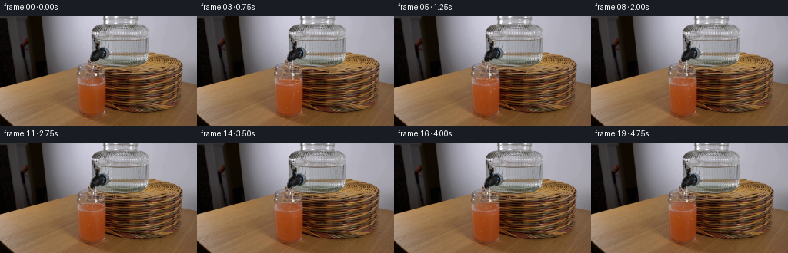
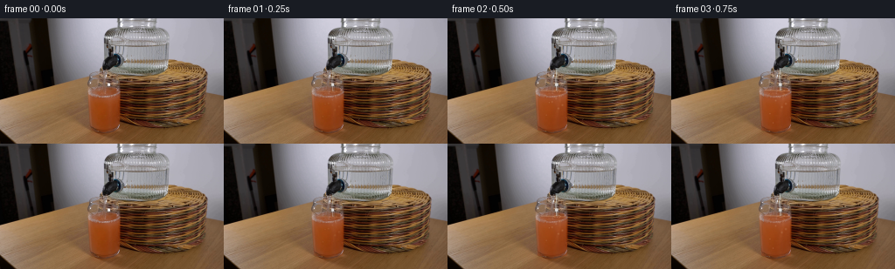

CODING AGENTS AS PIXEL WORLD MODELS
traex/GPT-5.6-Sol · 0186
点击播放 · 原生 RGB 像素
逐轮保存的候选
回放视频、检查图与代码变化。
每份候选均可单独播放。实际图片检查记录在下方工具轨迹中。
候选 01播放与检查图
点击播放 · 原生 RGB 像素


展开代码变化
--- 上一保存版本
+++ 本次保存版本
@@ -0,0 +1,152 @@
+from pathlib import Path
+import numpy as np
+from PIL import Image
+import cv2
+import artifact_io
+
+# The camera is locked. All motion is confined to the clear falling stream and
+# the contents of the receiving glass; the photographed first frame remains the
+# background and, by contract, is emitted without alteration.
+ROOT = Path(__file__).resolve().parent
+base = np.asarray(Image.open(ROOT / "first_frame.png").convert("RGB"), dtype=np.uint8)
+H, W = base.shape[:2]
+Y, X = np.mgrid[0:H, 0:W].astype(np.float32)
+
+
+def composite(im, color, alpha):
+ """Alpha composite either a color or an RGB array into uint8 RGB."""
+ a = np.clip(alpha, 0.0, 1.0)[..., None].astype(np.float32)
+ c = np.asarray(color, dtype=np.float32)
+ if c.ndim == 1:
+ c = np.broadcast_to(c, im.shape)
+ return np.clip(im.astype(np.float32) * (1-a) + c * a, 0, 255).astype(np.uint8)
+
+
+def soft_mask(binary, sigma=.65):
+ m = np.asarray(binary, np.float32)
+ if sigma:
+ m = cv2.GaussianBlur(m, (0, 0), sigmaX=sigma, sigmaY=sigma)
+ return np.clip(m, 0, 1)
+
+
+def glass_inside(level):
+ """Interior of the small glass beneath the dispenser, excluding its rim."""
+ # The glass is slightly tapered: x=106..136 near its lip, x=102..136 low down.
+ yy = np.maximum(Y - 75.0, 0)
+ left = 106.3 - .077 * yy
+ right = 135.7 + .008 * yy
+ return (Y >= level) & (Y <= 128.2) & (X >= left) & (X <= right)
+
+
+def make_frame(k):
+ if k == 0:
+ return base.copy()
+
+ im = base.copy()
+ # The dispenser is already open at the start of the clip. A two-frame ramp
+ # prevents a hard synthetic-looking cut while retaining the exact source frame.
+ ramp = min(1.0, k / 2.0)
+ progress = k / 19.0
+ # Water raises the grapefruit juice by a visible but physically modest amount.
+ level = 84.5 - 8.2 * (progress ** .78)
+ inside = glass_inside(level)
+
+ # Added water dilutes the upper portion, while the original photographed
+ # texture is retained as luminance detail through the translucent tint.
+ depth = np.clip((Y-level) / 45.0, 0, 1)
+ liquid_alpha = (.31 + .08*(1-depth)) * inside * ramp
+ # Warm pink-orange grapefruit juice, paler near the freshly added water.
+ target = np.empty_like(base, dtype=np.float32)
+ target[..., 0] = 183 - 30*depth
+ target[..., 1] = 91 - 30*depth
+ target[..., 2] = 48 - 25*depth
+ im = composite(im, target, liquid_alpha)
+
+ # A thin, brighter meniscus. Its slight tilt agrees with the perspective.
+ surface_y = level + 0.032*(X-121.0)
+ meniscus_region = (X > 106.2) & (X < 135.7)
+ m1 = np.exp(-0.5*((Y-surface_y)/.58)**2) * meniscus_region * ramp
+ im = composite(im, (225, 158, 112), .33*m1)
+ m2 = np.exp(-0.5*((Y-(surface_y+1.45))/.72)**2) * meniscus_region * ramp
+ im = composite(im, (115, 51, 24), .15*m2)
+
+ # Turbulent mixing plumes under the impact point. These are soft and
+ # semi-transparent so the original photographic grain and reflections remain.
+ phase = 1.15*k
+ plume_x = 125.2 + 2.8*np.sin(.105*(Y-level) + phase*.28)
+ plume = np.exp(-((X-plume_x)/(1.15 + .035*(Y-level)))**2)
+ plume *= np.exp(-np.clip(Y-level,0,None)/34.0) * inside
+ plume *= (0.55 + .45*np.sin(.48*Y + .42*k)**2)
+ im = composite(im, (229, 151, 96), .11*plume*ramp)
+ plume2_x = 119.5 + 4.1*np.sin(.075*(Y-level)-phase*.19)
+ plume2 = np.exp(-((X-plume2_x)/1.75)**2)
+ plume2 *= np.exp(-np.clip(Y-level,0,None)/41.0) * inside
+ im = composite(im, (119, 47, 21), .055*plume2*ramp)
+
+ # The clear water column refracts the fixed scene. Its center meanders by
+ # less than one pixel, as a real narrow gravity-fed stream does.
+ top = 57.0
+ impact = level - .4
+ cy = np.clip(Y-top, 0, None)
+ center = 124.6 + .50*np.sin(.25*cy + .71*k) + .18*np.sin(.82*k)
+ radius = 1.45 + .14*np.sin(.36*cy + .47*k)
+ valid = (Y >= top) & (Y <= impact)
+ d = np.abs(X-center)
+ core = soft_mask((d < radius) & valid, .42) * ramp
+
+ # A one-pixel horizontal refraction of the photographed background supplies
+ # convincing internal texture without introducing an opaque painted stripe.
+ refracted = np.roll(base, 2, axis=1).astype(np.float32)
+ refracted = refracted*.68 + np.array([202,218,220],np.float32)*.32
+ im = composite(im, refracted, .53*core)
+ # Specular edge and darker far edge define a transparent cylindrical stream.
+ hi = np.exp(-0.5*((X-(center-.85))/.40)**2) * valid * ramp
+ lo = np.exp(-0.5*((X-(center+1.05))/.46)**2) * valid * ramp
+ im = composite(im, (240, 247, 242), .46*hi)
+ im = composite(im, (68, 75, 70), .15*lo)
+
+ # Small attachment bead immediately below the spout.
+ bead_x = 124.7 + .16*np.sin(k*.7)
+ bead = (((X-bead_x)/2.05)**2 + ((Y-57.5)/1.45)**2 < 1) * ramp
+ bead = soft_mask(bead, .45)
+ im = composite(im, (215, 231, 230), .27*bead)
+
+ # Impact dimple, outward ripples and a few short-lived splash droplets.
+ ix = 124.7 + .45*np.sin(.71*k)
+ iy = level
+ rr = np.sqrt(((X-ix)/1.7)**2 + ((Y-iy)/.62)**2)
+ ring = np.exp(-((rr-2.25)/.38)**2)
+ ring *= (X>106)&(X<136)&(np.abs(Y-iy)<2.7)
+ im = composite(im, (241, 184, 136), .26*ring*ramp)
+ dimple = np.exp(-((X-ix)/2.15)**2 - ((Y-(iy+.4))/.72)**2)
+ im = composite(im, (91, 42, 25), .13*dimple*ramp)
+
+ # Deterministic tiny entrained bubbles. Each rises, drifts, and then recycles.
+ for j in range(9):
+ age = (k*.88 + j*3.17) % 21.0
+ by = min(126.0, level+7.0 + ((j*11.3) % 37.0)) - age*1.18
+ if by < level+2.0:
+ continue
+ bx = 111.0 + ((j*7.73) % 21.0) + .7*np.sin(.55*k+j)
+ rad = .48 + .16*(j%3)
+ bubble = np.exp(-((X-bx)**2+(Y-by)**2)/(2*rad*rad)) * inside
+ # bright upper-left glint and a faint darker lower rim
+ im = composite(im, (244, 189, 143), .25*bubble*ramp)
+ rim = np.exp(-((X-(bx+.32))**2+(Y-(by+.34))**2)/(2*(rad*.8)**2))*inside
+ im = composite(im, (92, 44, 25), .10*rim*ramp)
+
+ # Occasional pin droplets right at the impact, never outside the glass.
+ for j in range(3):
+ cyc = (k*1.37 + j*2.4) % 6.5
+ dx = ix + (j-1)*1.7 + .35*np.sin(k+j)
+ dy = iy - 1.0 - cyc*.58 + .18*cyc*cyc
+ drop = np.exp(-((X-dx)/.48)**2 - ((Y-dy)/.68)**2)
+ drop *= (Y>top+2)&(Y<iy+1)&(X>108)&(X<135)
+ im = composite(im, (227, 237, 231), .25*drop*ramp)
+ return im
+
+
+frames = np.stack([make_frame(i) for i in range(20)]).astype(np.uint8)
+assert frames.shape == (20, 144, 256, 3)
+assert np.array_equal(frames[0], base)
+artifact_io.save(frames, ROOT)
可观测工具轨迹
实际执行的命令与返回图片。
命令 1exit 0
/bin/bash -lc "cat GENERATION_RULES.md && printf '\\n---PROMPT---\\n' && cat prompt.txt"
命令 2exit 127
/bin/bash -lc "find . -maxdepth 2 -type f -printf '%p\\n' | sort && file first_frame.png"
命令 3exit 0
/bin/bash -lc "python3 - <<'PY'
from PIL import Image
import numpy as np
im=np.array(Image.open('first_frame.png').convert('RGB'))
print(im.shape, im.dtype)
print('min max mean median std',im.min((0,1)), im.max((0,1)),im.mean((0,1)),np.median(im.reshape(-1,3),0),im.std((0,1)))
# unique most common quantized colors
q=(im//16)*16
u,c=np.unique(q.reshape(-1,3),axis=0,return_counts=True)
for i in np.argsort(c)[-30:][::-1]: print(c[i],u[i])
# block means grid 16x9
for y in range(0,144,16):
print('ROW',y, ['%02x%02x%02x'%tuple(im[y:y+16,x:x+16].mean((0,1)).astype(int)) for x in range(0,256,16)])
PY"命令 4exit 0
/bin/bash -lc "python3 - <<'PY'
from PIL import Image
import numpy as np
im=np.array(Image.open('first_frame.png').convert('RGB'))
# ascii lum every 2x3? print 128x48
chars=' .,:;irsXA253hMHGS#9B&@'
g=(.2126*im[:,:,0]+.7152*im[:,:,1]+.0722*im[:,:,2])
for yy in range(0,144,3):
s=''
for xx in range(0,256,2):
v=g[yy:yy+3,xx:xx+2].mean(); s+=chars[min(len(chars)-1,int(v/256*len(chars)))]
print(s)
PY"命令 5exit 0
/bin/bash -lc "python3 - <<'PY'
import cv2, numpy as np
im=cv2.imread('first_frame.png'); g=cv2.cvtColor(im,cv2.COLOR_BGR2GRAY)
e=cv2.Canny(g,60,120)
# maxpool 2x2, print 128x72
for y in range(0,144,2):
print(''.join('#' if e[y:y+2,x:x+2].max() else ' ' for x in range(0,256,2)))
PY"命令 6exit 0
/bin/bash -lc "python3 - <<'PY'
from PIL import Image
import numpy as np
from sklearn.cluster import KMeans
im=np.array(Image.open('first_frame.png').convert('RGB'))
# colors + coords features weakly
X=im.reshape(-1,3)
km=KMeans(12,random_state=2,n_init=10).fit(X[::3])
lab=km.predict(X).reshape(144,256)
print(np.round(km.cluster_centers_).astype(int))
# order clusters by center lum chars unique
chars='0123456789AB'
for y in range(0,144,3):
print(''.join(chars[np.bincount(lab[y:y+3,x:x+2].ravel(),minlength=12).argmax()] for x in range(0,256,2)))
PY"命令 7exit 0
/bin/bash -lc "python3 - <<'PY'
from PIL import Image
import numpy as np
im=np.array(Image.open('first_frame.png').convert('RGB'))
# each row output runs based on kmeans labels from manually broad classes by nearest centers
from sklearn.cluster import KMeans
km=KMeans(10,random_state=1,n_init=10).fit(im.reshape(-1,3)[::2])
L=km.predict(im.reshape(-1,3)).reshape(144,256)
for y in [0,10,20,30,40,50,55,60,65,70,75,80,85,90,100,110,120,130,140]:
# runs length >=3
a=L[y]; runs=[]; st=0
for x in range(1,256):
if a[x]"'!=a[st]:
if x-st>=3:runs.append((st,x-1,a[st]))
st=x
if 256-st>=3:runs.append((st,255,a[st]))
print(y,runs)
print('"'centers',[(i,tuple(map(int,c))) for i,c in enumerate(km.cluster_centers_)])
# sample pixel matrix coords
for y in range(0,145,10):
print(y,[tuple(im[min(y,143),x]) for x in range(0,256,10)])
PY"命令 8exit 0
/bin/bash -lc "python3 - <<'PY'
import cv2,numpy as np
im=cv2.imread('first_frame.png'); g=cv2.cvtColor(im,cv2.COLOR_BGR2GRAY)
for th1,th2 in [(30,80),(60,120),(100,180)]:
e=cv2.Canny(g,th1,th2)
lines=cv2.HoughLinesP(e,1,np.pi/180,threshold=18,minLineLength=12,maxLineGap=3)
print('\\n',th1)
z=[]
for q in lines[:,0]:
x1,y1,x2,y2=map(int,q); l=np.hypot(x2-x1,y2-y1); ang=np.degrees(np.arctan2(y2-y1,x2-x1))
z.append((round(l,1),round(ang,1),(x1,y1,x2,y2)))
for a in sorted(z,reverse=True)[:80]:print(a)
PY"命令 9exit 0
/bin/bash -lc "cat artifact_io.py && python3 - <<'PY'
# report change-sensitive local patches: mean/hsv and edge maps for center x100:160 y30:144 at 2x2 symbols by color class
from PIL import Image
import numpy as np,cv2
im=np.array(Image.open('first_frame.png').convert('RGB'))
# define class: K dark, g gray, W light, T tan, O orange, B brown; classification by sat & lum
for y in range(20,144,2):
s=''
for x in range(90,171,2):
p=im[y:y+2,x:x+2].mean((0,1)); mx=p.max(); mn=p.min(); lum=p.mean(); sat=mx-mn
if lum<35:c='K'
elif sat<15 and lum<80:c='d'
elif sat<18 and lum<135:c='g'
elif sat<24 and lum>=135:c='L'
elif p[0]>p[1]*1.8 and p[0]>90:c='O'
elif p[0]-p[2]>55 and p[1]-p[2]>20 and lum>80:c='T'
elif p[0]-p[2]>35:c='b'
else:c='?'
s+=c
print(f'{y:03}',s)
PY"命令 10exit 0
/bin/bash -lc "python3 - <<'PY'
import cv2,numpy as np
from PIL import Image
im=np.array(Image.open('first_frame.png').convert('RGB')); g=cv2.cvtColor(im,cv2.COLOR_RGB2GRAY); e=cv2.Canny(g,80,160)
# crop x90-180,y20-140 edge exact
for y in range(15,140):
print(f'{y:03} '+''.join('#' if e[y,x] else ' ' for x in range(90,191)))
PY"命令 11exit 0
/bin/bash -lc "python3 - <<'PY'
from PIL import Image
import numpy as np
im=np.array(Image.open('first_frame.png').convert('RGB'))
for y in range(0,130,2):
print(y, ['%02x%02x%02x'%tuple(im[y,x]) for x in range(112,151,3)])
PY"命令 12exit 0
/bin/bash -lc "cat > generate.py <<'PY'
from pathlib import Path
import numpy as np
from PIL import Image
import cv2
import artifact_io
# The camera is locked. All motion is confined to the clear falling stream and
# the contents of the receiving glass; the photographed first frame remains the
# background and, by contract, is emitted without alteration.
ROOT = Path(__file__).resolve().parent
base = np.asarray(Image.open(ROOT / \"first_frame.png\").convert(\"RGB\"), dtype=np.uint8)
H, W = base.shape[:2]
Y, X = np.mgrid[0:H, 0:W].astype(np.float32)
def composite(im, color, alpha):
\"\"\"Alpha composite either a color or an RGB array into uint8 RGB.\"\"\"
a = np.clip(alpha, 0.0, 1.0)[..., None].astype(np.float32)
c = np.asarray(color, dtype=np.float32)
if c.ndim == 1:
c = np.broadcast_to(c, im.shape)
return np.clip(im.astype(np.float32) * (1-a) + c * a, 0, 255).astype(np.uint8)
def soft_mask(binary, sigma=.65):
m = np.asarray(binary, np.float32)
if sigma:
m = cv2.GaussianBlur(m, (0, 0), sigmaX=sigma, sigmaY=sigma)
return np.clip(m, 0, 1)
def glass_inside(level):
\"\"\"Interior of the small glass beneath the dispenser, excluding its rim.\"\"\"
# The glass is slightly tapered: x=106..136 near its lip, x=102..136 low down.
yy = np.maximum(Y - 75.0, 0)
left = 106.3 - .077 * yy
right = 135.7 + .008 * yy
return (Y >= level) & (Y <= 128.2) & (X >= left) & (X <= right)
def make_frame(k):
if k == 0:
return base.copy()
im = base.copy()
# The dispenser is already open at the start of the clip. A two-frame ramp
# prevents a hard synthetic-looking cut while retaining the exact source frame.
ramp = min(1.0, k / 2.0)
progress = k / 19.0
# Water raises the grapefruit juice by a visible but physically modest amount.
level = 84.5 - 8.2 * (progress ** .78)
inside = glass_inside(level)
# Added water dilutes the upper portion, while the original photographed
# texture is retained as luminance detail through the translucent tint.
depth = np.clip((Y-level) / 45.0, 0, 1)
liquid_alpha = (.31 + .08*(1-depth)) * inside * ramp
# Warm pink-orange grapefruit juice, paler near the freshly added water.
target = np.empty_like(base, dtype=np.float32)
target[..., 0] = 183 - 30*depth
target[..., 1] = 91 - 30*depth
target[..., 2] = 48 - 25*depth
im = composite(im, target, liquid_alpha)
# A thin, brighter meniscus. Its slight tilt agrees with the perspective.
surface_y = level + 0.032*(X-121.0)
meniscus_region = (X > 106.2) & (X < 135.7)
m1 = np.exp(-0.5*((Y-surface_y)/.58)**2) * meniscus_region * ramp
im = composite(im, (225, 158, 112), .33*m1)
m2 = np.exp(-0.5*((Y-(surface_y+1.45))/.72)**2) * meniscus_region * ramp
im = composite(im, (115, 51, 24), .15*m2)
# Turbulent mixing plumes under the impact point. These are soft and
# semi-transparent so the original photographic grain and reflections remain.
phase = 1.15*k
plume_x = 125.2 + 2.8*np.sin(.105*(Y-level) + phase*.28)
plume = np.exp(-((X-plume_x)/(1.15 + .035*(Y-level)))**2)
plume *= np.exp(-np.clip(Y-level,0,None)/34.0) * inside
plume *= (0.55 + .45*np.sin(.48*Y + .42*k)**2)
im = composite(im, (229, 151, 96), .11*plume*ramp)
plume2_x = 119.5 + 4.1*np.sin(.075*(Y-level)-phase*.19)
plume2 = np.exp(-((X-plume2_x)/1.75)**2)
plume2 *= np.exp(-np.clip(Y-level,0,None)/41.0) * inside
im = composite(im, (119, 47, 21), .055*plume2*ramp)
# The clear water column refracts the fixed scene. Its center meanders by
# less than one pixel, as a real narrow gravity-fed stream does.
top = 57.0
impact = level - .4
cy = np.clip(Y-top, 0, None)
center = 124.6 + .50*np.sin(.25*cy + .71*k) + .18*np.sin(.82*k)
radius = 1.45 + .14*np.sin(.36*cy + .47*k)
valid = (Y >= top) & (Y <= impact)
d = np.abs(X-center)
core = soft_mask((d < radius) & valid, .42) * ramp
# A one-pixel horizontal refraction of the photographed background supplies
# convincing internal texture without introducing an opaque painted stripe.
refracted = np.roll(base, 2, axis=1).astype(np.float32)
refracted = refracted*.68 + np.array([202,218,220],np.float32)*.32
im = composite(im, refracted, .53*core)
# Specular edge and darker far edge define a transparent cylindrical stream.
hi = np.exp(-0.5*((X-(center-.85))/.40)**2) * valid * ramp
lo = np.exp(-0.5*((X-(center+1.05))/.46)**2) * valid * ramp
im = composite(im, (240, 247, 242), .46*hi)
im = composite(im, (68, 75, 70), .15*lo)
# Small attachment bead immediately below the spout.
bead_x = 124.7 + .16*np.sin(k*.7)
bead = (((X-bead_x)/2.05)**2 + ((Y-57.5)/1.45)**2 < 1) * ramp
bead = soft_mask(bead, .45)
im = composite(im, (215, 231, 230), .27*bead)
# Impact dimple, outward ripples and a few short-lived splash droplets.
ix = 124.7 + .45*np.sin(.71*k)
iy = level
rr = np.sqrt(((X-ix)/1.7)**2 + ((Y-iy)/.62)**2)
ring = np.exp(-((rr-2.25)/.38)**2)
ring *= (X>106)&(X<136)&(np.abs(Y-iy)<2.7)
im = composite(im, (241, 184, 136), .26*ring*ramp)
dimple = np.exp(-((X-ix)/2.15)**2 - ((Y-(iy+.4))/.72)**2)
im = composite(im, (91, 42, 25), .13*dimple*ramp)
# Deterministic tiny entrained bubbles. Each rises, drifts, and then recycles.
for j in range(9):
age = (k*.88 + j*3.17) % 21.0
by = min(126.0, level+7.0 + ((j*11.3) % 37.0)) - age*1.18
if by < level+2.0:
continue
bx = 111.0 + ((j*7.73) % 21.0) + .7*np.sin(.55*k+j)
rad = .48 + .16*(j%3)
bubble = np.exp(-((X-bx)**2+(Y-by)**2)/(2*rad*rad)) * inside
# bright upper-left glint and a faint darker lower rim
im = composite(im, (244, 189, 143), .25*bubble*ramp)
rim = np.exp(-((X-(bx+.32))**2+(Y-(by+.34))**2)/(2*(rad*.8)**2))*inside
im = composite(im, (92, 44, 25), .10*rim*ramp)
# Occasional pin droplets right at the impact, never outside the glass.
for j in range(3):
cyc = (k*1.37 + j*2.4) % 6.5
dx = ix + (j-1)*1.7 + .35*np.sin(k+j)
dy = iy - 1.0 - cyc*.58 + .18*cyc*cyc
drop = np.exp(-((X-dx)/.48)**2 - ((Y-dy)/.68)**2)
drop *= (Y>top+2)&(Y<iy+1)&(X>108)&(X<135)
im = composite(im, (227, 237, 231), .25*drop*ramp)
return im
frames = np.stack([make_frame(i) for i in range(20)]).astype(np.uint8)
assert frames.shape == (20, 144, 256, 3)
assert np.array_equal(frames[0], base)
artifact_io.save(frames, ROOT)
PY
python3 generate.py
python3 - <<'PY'
import numpy as np
from PIL import Image
p=np.load('pixels.npz')['pixels']
print('pixels',p.shape,p.dtype)
a=np.array(Image.open('first_frame.png').convert('RGB')); b=np.array(Image.open('frames/00.png'))
print('first exact',np.array_equal(a,b))
for i in range(1,20):
c=np.array(Image.open(f'frames/{i:02d}.png'))
d=np.abs(c.astype(int)-a.astype(int)); ys,xs=np.where(np.any(d,2)); print(i,len(xs),(xs.min(),ys.min(),xs.max(),ys.max()),round(d.mean(),3))
PY"命令 13exit 0
/bin/bash -lc "python3 - <<'PY'
from PIL import Image
import numpy as np,cv2
# ASCII difference enlarged and crop pixel values frame 10
b=np.array(Image.open('frames/00.png')); a=np.array(Image.open('frames/10.png'))
d=np.abs(a.astype(int)-b.astype(int)).max(2)
for y in range(45,135,2):
print(f'{y:03}', ''.join(' ' if d[y:y+2,x:x+1].max()<3 else '.' if d[y:y+2,x:x+1].max()<10 else '+' if d[y:y+2,x:x+1].max()<25 else '#' for x in range(95,146)))
# montage crops x90:145 y40:135 scale 4
ims=[]
for i in [0,1,2,5,10,15,19]:
im=Image.open(f'frames/{i:02d}.png').crop((90,40,146,135)).resize((224,380))
ims.append(im)
out=Image.new('RGB',(224*len(ims),380));
for j,im in enumerate(ims):out.paste(im,(j*224,0))
out.save('.tmp/crops.png')
PY"保存候选 1 份；完成命令 13 次；可验证图片返回 0 张。原始 API 响应与完整日志保留在本地。